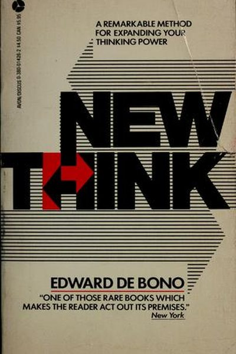

Library › Creativity
Lateral Thinking — Summary & Key Lessons

The classic that taught the world to think sideways — and gave us the phrase 'think outside the box.'
📖 OPEN THE FULL INTERACTIVE BREAKDOWN →🌐 Read it in Hindi, Hinglish, Gujarati, Tamil & 22 more languages — free, with audio.
💡 The Big Idea
Edward de Bono — the father of the 'six thinking hats' — showed that the brain runs on patterns: it is brilliant at recognizing them and terrible at escaping them. Vertical (logical) thinking deepens existing patterns; lateral thinking deliberately disrupts them. His toolkit — random entry, reversal, provocation, escape — turns creativity from a lucky accident into a trainable skill anyone can use to generate genuinely new ideas.
🧠 The 5 Key Lessons
Lesson 1: Dig Elsewhere: Vertical vs. Lateral
The Way of Thinking
Vertical thinking is logical, sequential and correct — the perfect tool for refining what already exists. But it can only deepen the current hole. Lateral thinking's job is different: to change the pattern itself, to dig elsewhere. Both are needed — lateral thinking generates new ideas, vertical thinking develops them into workable solutions.
📖 Example: For centuries, everyone 'knew' a camera needed film to capture an image. Film was refined for decades (vertical). Then someone asked 'why film at all?' (lateral) — and digital photography replaced the whole industry. Read the full example →
⚡ Do this: Before your next brainstorm, label which mode you're in. If everyone is refining the same idea, force one 'why not?' question.
Lesson 2: Escape Dominant Ideas
Patterns
The brain's pattern system makes us see what we expect to see. Dominant ideas — 'this is how it's always done' — blind us to better options. De Bono's escape technique: list the assumptions in any situation, then deliberately invert the most sacred one. The inverted assumption is not the answer; it is the door.
📖 Example: The 'dominant idea' that a newspaper must be printed on paper is why newspaper companies died with print — while the inverted question ('what would a newspaper be if it were digital-first?') built the Huffington Post and Substack. Read the full example →
⚡ Do this: Write down 5 assumptions about your current problem. Pick the most sacred one and ask: what if the opposite were true? Play with the answer for 10 minutes.
Lesson 3: Random Entry: Let Chance In
Random Entry
Deliberate thinking follows roads you've already built — so de Bono suggests letting a random word, object or image crash the party. The brain, forced to connect the random element to your problem, generates connections it would never have found logically. Randomness is not a substitute for thinking; it is fuel for it.
📖 Example: A design team stuck on a water-bottle problem draws the random word 'giraffe' — and minutes later someone says: 'What if the bottle were long-necked, so you can drink without tilting?' The random word unlocked a real innovation. Read the full example →
⚡ Do this: Stuck on something? Pick a random word from a book or dictionary, and force three connections between it and your problem. Write them down.
Lesson 4: Reversal: Turn It Upside Down
Reversal
Reversal takes a normal situation and asks 'what if it were the other way round?' — not as a real proposal, but as a provocation that breaks the pattern. Reversed statements feel wrong, and that wrongness is exactly what forces fresh thinking.
📖 Example: Restaurants normally serve food and bill customers after. Reversal: customers pay in advance, sight unseen — the pattern-break idea behind subscription boxes, meal kits and many 'cook at home' brands. Read the full example →
⚡ Do this: Take your current project and write its most obvious rule. Reverse it. What would the reversed world look like? Mine it for 3 ideas.
Lesson 5: Provocation: The Power of 'Po'
Provocation
De Bono invented the word 'Po' (provocative operation) to signal: the next statement is deliberately impossible — do not judge it, move with it. Provocations like 'cars should have square wheels' or 'restaurants should have no menu' feel absurd, but moving from an absurd starting point produces genuinely new design space.
📖 Example: The provocation 'a car that drives itself' sounded like a joke in 2005 — yet the companies that moved with it (not judged it) built the self-driving industry. Every breakthrough began as someone's 'Po.' Read the full example →
⚡ Do this: This week, write one deliberately absurd 'Po' about your problem and spend 15 minutes moving with it — no judging allowed.
✅ 5-Step Action Plan
- Label your thinking mode: are you refining (vertical) or escaping (lateral)?
- List 5 assumptions about your problem and invert the most sacred one.
- Use random entry: one random word, three forced connections.
- Reverse the most obvious rule of your project and mine the reversal.
- Write one 'Po' — an absurd provocation — and move with it for 15 minutes.
⚠️ When This Doesn't Work
De Bono's 'think sideways' is the most famous creativity method ever — and Digg v4 is its monument: the site's redesign was a masterpiece of lateral thinking — a bold, sideways reinvention of the entire product — and it killed the company in weeks, because users didn't want sideways, they wanted the old thing that worked. Lateral thinking is only valuable when aimed at a real problem; aimed at a successful product, it becomes vandalism. Sometimes the most creative move is refusing to be creative about something that isn't broken.
💀 The Graveyard Proves It
⛏️ Digg — The Redesign That Deleted the Community. Burn: $175M valuation → $500k sale. Read the full case study →
💬 Best Quotes from Lateral Thinking
- “You cannot dig a hole in a different place by digging the same hole deeper.”
- “Creativity involves breaking out of established patterns in order to look at things in a different way.”
- “The purpose of lateral thinking is not to be right, but to generate ideas.”
Interactive version: mark lessons as read, listen in your language, share quote cards.